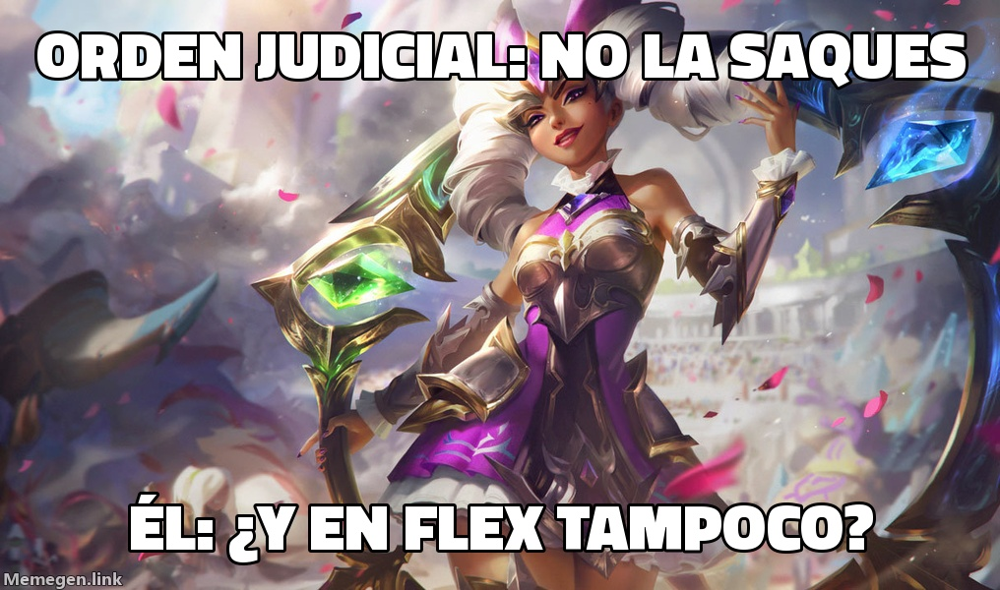

CULTURA · Biblioteca de Shurima
Entrevista
La emperatriz pide volver con Wôlf
Qiyana, cuatro derrotas de cuatro en manos del Barón de la Moneda, habla con este periódico tras ser sacada otra vez, esta vez con el grupo entero mirando.

El domingo estaba en manos de Wôlf, que la paseó por la jungla con once muertes. El lunes el Barón la recuperó para la segunda Flex de la tarde, con los cinco en la partida, y la devolvió al carril central para perder su calle contra un Viktor: 2/7/6, el 11,2 % del daño del equipo y la cuarta derrota de cuatro en la hemeroteca. La recibimos en la Biblioteca de Shurima, donde ha pedido asilo entre los tomos descatalogados.
—Majestad, ¿cómo se encuentra?
—Furiosa. Soy la emperatriz de Ixtal. Domino la piedra, el río y la selva. Él me usa para cruzar la calle.
—Había una orden del tribunal que le prohibía sacarla.
—La leyó, estoy segura. Es de los que leen las condiciones y luego aceptan igual.
—Justo antes había ganado con Ekko.
—Por eso duele. Ganó con Ekko y vino a buscarme a mí. Es como salir de una entrevista de trabajo que ha ido bien y pegarse fuego en el aparcamiento.
—¿Qué pasó contra Viktor?
—Viktor tiene un brazo de metal y un plan. Mi invocador tenía prisa. Viktor acabó con más de tres mil monedas de ventaja y yo con siete muertes y la sensación de ser un préstamo.
—¿Por qué quiere volver con Wôlf? También perdió con él.
—Me mató once veces, sí, pero en la jungla, donde nadie mira. El Barón me pone en el centro, con todos sus amigos en la partida. Hay humillaciones que se llevan mejor sin público.
—¿Un mensaje para su invocador?
—Que me saque una quinta vez. Quiero saber si el tribunal tiene algo más que papel.